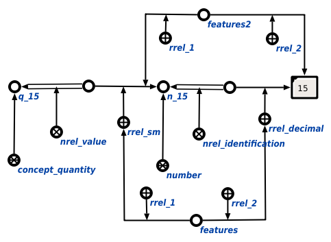

Задачей scp-программы получения информации о величине или числе является получение информации о величине или числе. Первым входным параметром является узел величины или числа, информацию о котором необходимо получить. Вторым входным параметром является множество, в которое под атрибутом 1' будет занесена размерность величины, если анализируемым объектом является величина, а под атрибутом 2' - разрядность числа в рамках цепочки значения или идентификации. Третьим входным параметром является множество, в которое под атрибутом 1' будет занесена дуга цепочки значения, уточняемая атрибутом размерности, а под атрибутом 2' - значение sc-ссылки числа или величины. В ходе выполнения программы явно указывается связь со следующими ключевыми узлами: абсолютным понятием величина, отношениями идентификация* и значение*, характеризующими цепочки значения и идентификации, порядковыми атрибутами 1' и 2', уточняющих элементы формируемых множеств. Ниже представлены результаты выполнения процедуры:
